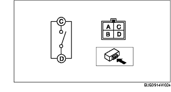
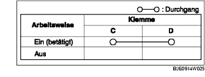

KOFFERRAUM-SCHLIESSZYLINDER-DRUCKKNOPF PRÜFEN
B3E091467002W08
1. Zwischen den Klemmen des Schließzylinder-Druckknopfs auf Durchgang prüfen.

• Falls nicht wie vorgeschrieben, den Kofferraumdeckel-Schließzylinderschalter austauschen.
